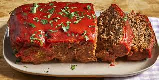

Meatloaf

Description
Get back to basics with this easy meatloaf recipe.
It's quick, traditional, delicious, and it's sure to
please everyone at your table.
Ingredients
- 1 tablespoon butter
- 1/4 cup minced onion
- 2 cloves garlic, minced
- 1 1/2 teaspoons salt
- 1 1/2 teaspoons freshly ground black pepper
- 2 pounds extra-lean ground beef
- 3 slices bread, toasted and crumbled
- 7 buttery round crackers, crushed
- 1 egg, lightly beaten
- 3 1/2 tablespoons sour cream
- 1 1/2 tablespoons Worcestershire sauce
- 1 (15 ounce) can tomato sauce, divided
- 3 tablespoons ketchup
Directions
- Preheat the oven to 350 degrees F (175 degrees C).
Gather all ingredients.
- Melt butter in a skillet over medium heat, and cook
onion and garlic until onion is soft and translucent,
about 5 minutes. Remove from heat, and season with salt
and pepper.
- Combine onion and garlic mixture, beef, crumbled bread,
crushed crackers, egg, sour cream, Worcestershire sauce,
and 1/2 can tomato sauce in a large bowl. Mix until well
combined. Gradually stir in milk, 1 teaspoon at a time,
until mixture is moist, but not soggy.
- Transfer the mixture to a 5x9-inch loaf pan.
- Bake uncovered in the preheated oven for 40 minutes.
Increase oven temperature to 400 degrees F (200 degrees C).
Continue baking 15 minutes, to an internal temperature of 160
degrees F (70 degrees C).
- Mix the remaining tomato sauce and ketchup in a small bowl.
Pour over the top of the meatloaf, and continue baking for
10 minutes.
- Serve hot and enjoy!